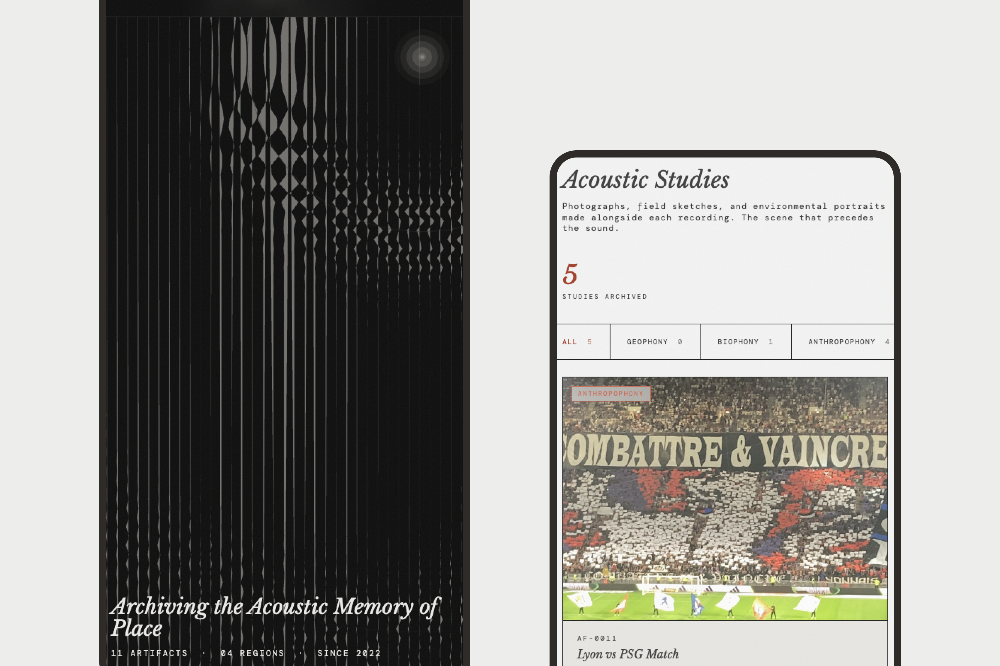
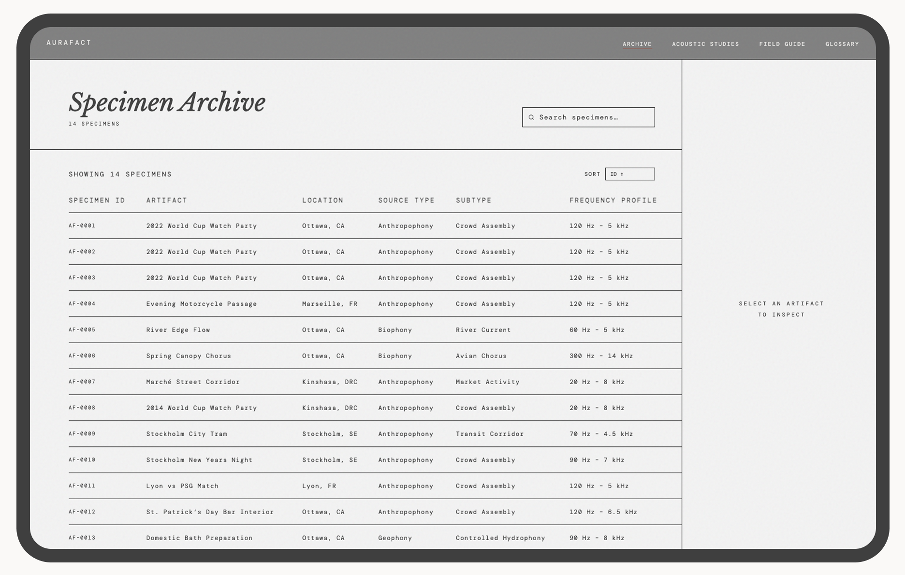
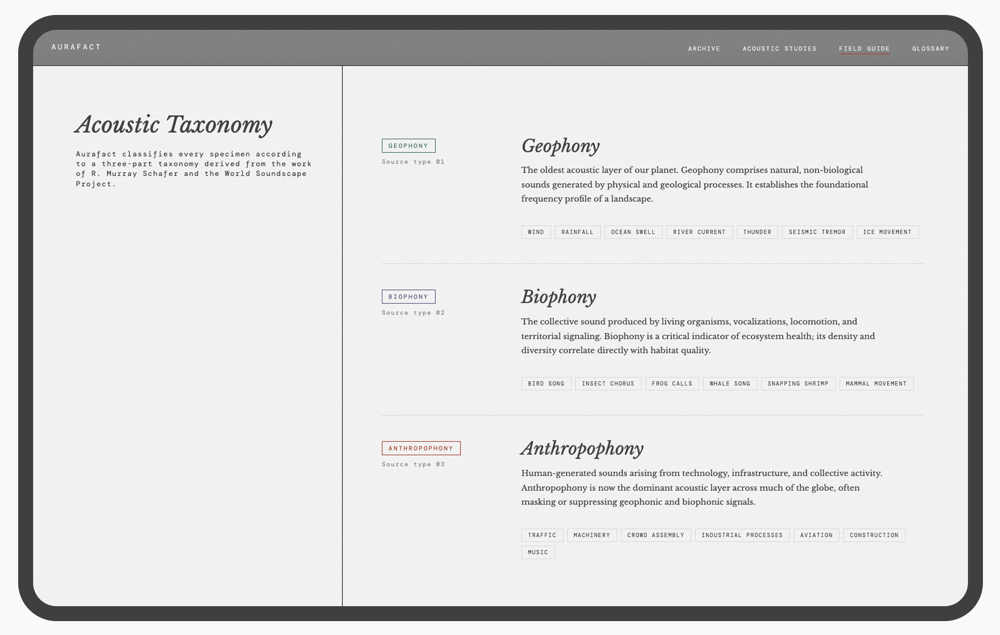
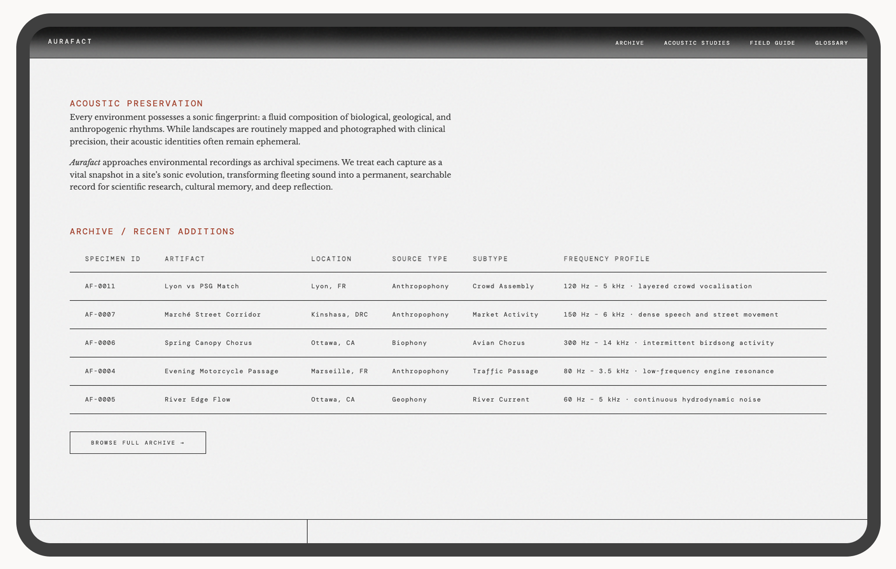

Sound is not absent. It is simply unkept. Aurafact is a spatial archive that treats environmental sound as a primary historical artifact, searchable, interpretable, and enjoyable.
Visit Aurafact
We live in a visually saturated world. Landscapes are mapped, photographed, and recorded with precision. But their acoustic identity, the density of birds before a wildfire, the rhythm of a tram line, the low hum of a harbour at dawn, disappears without record.
Existing approaches to sound archiving sit at two unhelpful extremes. Academic sound libraries are rich in data but absent of experience — digital graveyards that no one browses. Ambient sound apps are beautiful to inhabit but impossible to study, more like toys, not tools. Neither treats environmental audio as what it actually is: a primary historical artifact Sound is not absent. It is simply unkept.
Design question: How might we design an archive that treats environmental sound as a cultural artifact, searchable, interpretable, and usable across audiences?
Digital Graveyards
Academic sound archives, like The British Library Sound Archive, are rich in data, but are rarely experienced.
Aurafact sits between two worlds
A system that combines structure and experience. A research-grade archive that you actually want to inhabit.
Most interfaces treat audio as something to play. Aurafact treats it as something that happened. Aurafact treats sound as a documented specimen, inseparable from where it was captured, how it was recorded, what was present in that moment.
This reframed the entire system because a recording doesn’t belong in a playlist, it belongs in an archive with context, structure, and provenance.
A place without its sound is only half remembered.
— Aurafact field notes, 2026
A note on rigour: Aurafact is self-initiated with no external client, no brief from a commissioning body, and no user research cohort to validate against. The constraint that made the work rigorous wasn't a stakeholder, it was the cultural thesis itself. Every decision was held accountable to it: the taxonomy had to work for both archival researchers and casual visitors; specimen provenance had to meet archival standards, not just metadata formatting; the near-black homepage had to follow from the argument about image and sound, not from aesthetic preference.
Aurafact was developed in collaboration with three AI tools, each used with a specific role, not as shortcuts, but as extensions of the design process.
Claude + ChatGPT
Writing, structure, and rationale
Used to refine the manifesto, taxonomy, field notes, and case study language. Every output was reviewed and edited. The goal was precision, not automation.
Cursor + Claude
Front-end and interaction design
Used to write and iterate on the HTML, CSS, and JavaScript across all five pages. The p5.js waveform, GSAP transitions, archive table with split-panel detail view, and taxonomy colour system were all developed through directed prompting in Cursor, each output tested and refined against design intent.
ChatGPT + Perplexity
Research and taxonomy
Used to develop the three-axis classification system, the acoustic metadata schema and, the supporting research. All information was cross-checked before use. AI supported thinking, it did not replace it.
A prompt is a brief. A revision is a critique.
Cursor and Claude don't know what good looks like in your product, you do. The designer's job doesn't disappear when AI enters the workflow. It becomes more exact. The more precisely you can articulate what you're designing toward, the more precisely your tools can help you get there. AI fluency, at its core, is design fluency.
The homepage opens on a near-black field with a slow waveform animation, no imagery. No visual anchor. The absence of a visual anchor is a provocation, it asks the visitor to arrive differently than they would on any other site.
Two typefaces defined two modes. Serif for narrative and interpretation, and monospace for data and structure. The shift is functional because it tells the user what they are reading. In an archive where interpretation and data coexist on the same page, typography becomes a navigational signal, not decoration.
Classifying sound across three axes, source type, location, and frequency profile, required building a schema that works for both a researcher querying by biophony type and a visitor exploring by region. The taxonomy had to hold both use cases without flattening either.
The default for audio online is a gallery or playlist, prioritising mood over meaning. A table was the only format that kept provenance, metadata, and specimen identity intact. The table earns its archival credibility precisely because it doesn't feel like a music app.

A live, multi-page product demonstrating a new model for sound archiving.
Aurafact is hosted on GitHub and live at jenniferyaya.github.io/aura-fact. The product includes four pages:Homepage, Archive, Field Guide, and Glossary. The archive contains 13 specimens across 5 regions, each with full metadata and environmental context.
The homepage features a p5.js waveform animation, a searchable and sortable archive table, and a split-panel detail view with playback and full metadata. Every interaction was built through directed AI collaboration and refined to match the product's tone.
The project demonstrated that when you work with AI, the clearer the design brief and then the better the output. The more specific the prompt, the less revision required. AI fluency, at its core, is design fluency.

Designing for sound revealed how deeply visual most interface assumptions are. Building Aurafact required constructing a different representational vocabulary from scratch, taxonomy as sensory translation, metadata as environmental context, typography as content signal There was no existing model to borrow from. Every decision had to be derived from the argument about sound itself.
The longer-term direction is harder and more interesting than the archive: using AI not just to build the archive, but to reconstruct lost sound environments. That work requires acoustic modelling, historical source research, and a carefully developed framework for what counts as a plausible reconstruction versus a fabrication. The epistemological question has to precede the technical one.
Design a contribution protocol before opening the archive. Aurafact currently holds 19 specimens, all self-collected. The thesis implies a much larger collection: geographically distributed, historically diverse, contributed by field recordists and researchers. A contribution framework (field recording standards, metadata requirements, provenance documentation) needs to exist before the archive can scale without collapsing the rigour that makes it an archive rather than a repository.
Develop the reconstruction framework before touching the tools. The long-term direction, using AI to reconstruct lost sound environments, was named but not developed. That work requires acoustic modelling, historical source research, and careful thinking about what counts as a plausible reconstruction versus a fabrication. The epistemological framework has to precede the technical work. Building first and justifying later would produce something that looks like an archive and functions like speculation.